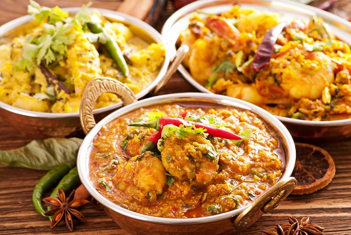

Indian cuisine is known for its large assortment of dishes and its liberal use of herbs and spices. Cooking styles vary from region to region.
Wheat, Basmati rice and pulses with chana (Bengal gram) are important staples of the Indian diet. The food is rich with curries and spices, including ginger, coriander, cardamom, turmeric, dried hot peppers, and cinnamon, among others. Chutneys — thick condiments and spreads made from assorted fruits and vegetables such as tamarind and tomatoes and mint, cilantro and other herbs — are used generously in Indian cooking. Many Hindus are vegetarian, but lamb and chicken are common in main dishes for non-vegetarians. The Guardian reports that between 20 percent and 40 percent of India's population is vegetarian. Much of Indian food is eaten with fingers or bread used as utensils. There is a wide array of breads served with meals, including naan, a leavened, oven-baked flatbread; and bhatoora, a fried, fluffy flatbread common in North India and eaten with chickpea curry.
(https://www.livescience.com/28634-indian-culture.html)